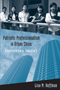

Browse
other Author lists:
A B C
D E F
G H I
J K L
M N O
P Q R
S T U
V W X
Y Z |

|
San Francisco's International Hotel
Mobilizing the Filipino American Community in the Anti-Eviction Movement
Habal, Estella
256 pp • 6x9 • Spring 2008
paper 978-1-59213-446-5
cloth 978-1-59213-445-8
|
|
Marriage
in a Culture of Divorce
Hackstaff,
Karla B.
292 pp • 6x9 • Fall 1999
paper 978-1-56639-725-4
cloth 978-1-56639-724-7
|
 |
America's First Adventure in China
Trade, Treaties, Opium, and Salvation
Haddad, John R.
294 pp • 6x9 • Spring 2013
paper 978-1-4399-0690-3
cloth 978-1-4399-0689-7
|
|
Abortion
Between Freedom and Necessity
Hadley,
Janet
256 pp • 6x9 • Fall 1996
paper 978-1-56639-591-5
cloth 978-1-56639-506-9 |
 |
The
Feel of Silence
Tucker,
Bonnie Poitras, foreword by Frederic Hafferty
232 pp • 6x9 • Fall 1995
paper 978-1-56639-352-2
cloth 978-1-56639-351-5
|
 |
Deciding
to be Legal
A Maya Community in Houston
Hagan,
Jacqueline Maria
224 pp • 5.5x8.25 • Fall 1994
paper 978-1-56639-257-0
cloth 978-1-56639-256-3 |
 |
Challenging Perspectives on Street-Based Sex Work
edited by Hail-Jares, Katie, Corey S. Shdaimah, and Chrysanthi S. Leon
308 pp • 6x9 • Spring 2017
paper 978-1-4399-1454-0
cloth 978-1-4399-1453-3
|
 |
William
Henry Jackson and the Transformation of the American Landscape
Hales,
Peter B.
368 pp • 11x8.5 • Spring 1988
paper 978-0-87722-478-5
cloth 978-1-56639-463-5 |
 |
Silver
Cities
The Photography of American Urbanization, 1839-1915
Hales,
Peter Bacon
315 pp • Fall 1983
paper 978-0-87722-399-3
cloth 978-0-87722-299-6 |
 |
Integrity
A Philosophical Inquiry
Halfon,
Mark S.
192 pp • Spring 1989
paper 978-0-87722-605-5 |
 |
Countervisions
Asian American Film Criticism
edited
by Hamamoto, Darrell Y. and Sandra Liu
317 pp • 7x10 • Spring 2000
paper 978-1-56639-776-6
cloth 978-1-56639-775-9 |
 |
Cinemas in Transition in Central and Eastern Europe after 1989
edited by Portuges, Catherine, and Peter Hames
288 pp • 6x9 • Fall 2012
cloth 978-1-59213-265-2 |
 |
Global
Production
The Apparel Industry in the Pacific Rim
edited
by Bonacich, Edna, Lucie Cheng, Norma Chinchilla, Nora Hamilton
and Paul Ong
400 pp • 6x9 • Spring 1994
paper 978-1-56639-169-6
cloth 978-1-56639-168-9
|
 |
Seeking
Community in a Global City
Guatemalans and Salvadorans in Los Angeles
Hamilton,
Nora and Norma Stoltz Chinchilla
304 pp • 6x9 • Spring 2001
paper 978-1-56639-868-8
cloth 978-1-56639-867-1
|
|
Oral History and Public Memories
edited by Hamilton, Paula and Linda Shopes
320 pp • 6x9 • Spring 2008
paper 978-1-59213-141-9
cloth 978-1-59123-140-2
|
 |
Uruguay
Nunca Más
Human Rights Violations, 1972-1985
Servicio
Paz y Justicia, translated by Elizabeth Hampsten, introduction
by Lawrence Wechsler
360 pp • 6x9 • Fall 1992
paper 978-1-56639-146-7
cloth 978-0-87722-953-7
|

|
The Americanization of Social Science
Intellectuals and Public Responsibility in the Postwar United States
Haney, David Paul
296 pp • 6x9 • Fall 2007
paper 978-1-59213-714-5
cloth 978-1-59213-713-8
|

|
Once the American Dream
A comprehensive national study of inner-ring suburbs in the U.S.
Hanlon, Bernadette
224 pp • 6x9 • Fall 2009
paper 978-1-59213-937-8
cloth 978-1-59213-936-1
|
 |
Families
in the U.S.
Kinship and Domestic Politics
edited
by Hansen, Karen V. and Anita Ilta Garey
944 pp • 7x10 • Spring 1998
paper 978-1-56639-590-8
cloth 978-1-56639-589-2
|
|
Women,
Class, and the Feminist Imagination
A Socialist-Feminist Reader
edited
by Hansen, Karen V. and Ilene J. Philipson
670 pp • Fall 1989
paper 978-0-87722-654-3
cloth 978-0-87722-630-7 |

|
The American Dream in the 21st Century
edited by Hanson, Sandra L. and John Kenneth White
168 pp • 5.5x8.25 • Spring 2011
paper 978-1-4399-0315-4
cloth 978-1-4399-0314-8
|
|
Lost
Talent
Women in the Sciences
Hanson,
Sandra L.
240 pp • 6x9 • Spring 1996
cloth 978-1-56639-446-8
|
 |
Swimming Against the Tide
African American Girls and Science Education
Hanson,
Sandra L.
224 pp • 5.5x8.25 • Fall 2008
paper 978-1-59213-622-3
cloth 978-1-59213-621-6
|

|
Trial Courts as Organizations
Ostrom, Brian J., Ostrom, Charles W., Jr., Hanson, Roger A., and Kleiman, Matthew
204 pp • 5.5x8.25 • Spring 2007
cloth 978-1-59213-630-8
|
 |
Marsh,
Meadow, Mountain
Natural Places of the Delaware Valley
edited
by Harding, John J., illustrated by Carol Decker
320 pp • Fall 1985
paper 978-0-87722-401-3
cloth 978-0-87722-391-7 |
 |
Birding
the Delaware Valley
A Comprehensive Guide to Birdwatching in Southeastern Pennsylvania,
Central and Southern New Jersey, and Northcentral Delaware
Harding,
John J. and Justin J. Harding
223 pp • 5.5x8.25 • Spring 1986
paper 978-0-87722-815-8
cloth 978-0-87722-182-1 |
 |
Arbitrariness
of the Death Penalty
Nakell,
Barry and Kenneth A. Hardy
Fall 1986
paper 978-0-87722-443-3 |
 |
Latina
Politics, Latino Politics
Gender, Culture, and Political Participation in Boston
Hardy-Fanta,
Carol
272 pp • 6x9 • Spring 1993
paper 978-1-56639-032-3
cloth 978-1-56639-031-6 |

|
Dewey's Dream
Universities and Democracies in an Age of Education Reform
Benson, Lee, Ira Harkavy, and Puckett, John
168 pp • 5.5x8.25 • Spring 2007
paper 978-1-59213-592-9
cloth 978-1-59213-591-2
|

|
Knowledge for Social Change
Bacon, Dewey, and the Revolutionary Transformation of Research Universities in the Twenty-First Century
Benson, Lee, Ira Harkavy, John Puckett, Matthew Hartley, Rita A. Hodges, Francis E. Johnston, and Joann Weeks
206 pp • 6x9 • Spring 2017
paper 978-1-4399-1519-6
cloth 978-1-4399-1518-9
|

|
Barriers and Belonging
Personal Narratives of Disability
edited
by Jarman, Michelle, Leila Monaghan, and Alison Quaggin Harkin
286 pp • Fall 2016
paper 978-1-4399-1388-8
cloth 978-1-4399-1387-1 |
 |
National
Insecurity
U.S. Intelligence After the Cold War
edited
by Eisendrath, Craig, foreword by Tom Harkin
296 pp • 6x9 • Fall 1999
paper 978-1-56639-848-0
cloth 978-1-56639-744-5
|
 |
Journeys
of Women in Science and Engineering
No Universal Constants
Ambrose,
Susan A., Kristin L. Dunkle, Barbara B. Lazarus, Indira Nair
and Deborah A. Harkus
512 pp • 7x10 • Spring 1997
paper 978-1-56639-528-1
cloth 978-1-56639-527-4
|
 |
Job
Training For Women
The Promise and Limits of Public Policies
edited
by Harlan, Sharon L. and Ronnie J. Steinberg
572 pp • Spring 1989
paper 978-0-87722-762-5
cloth 978-0-87722-614-7 |
 |
Soap
Fans
Pursuing Pleasure and Making Meaning in Everyday Life
Harrington,
C. Lee and Denise D. Bielby
240 pp • 6x9 • Fall 1995
paper 978-1-56639-330-0
cloth 978-1-56639-329-4
|
 |
Food
and Evolution
Toward a Theory of Human Food Habits
edited
by Harris, Marvin and Eric B. Ross
640 pp • Spring 1987
paper 978-0-87722-668-0
cloth 978-0-87722-435-8 |

|
The
Philosophy of Alain Locke
Harlem Renaissance and Beyond
edited
by Harris, Leonard
344 pp • Fall 1988
paper 978-0-87722-829-5
cloth 978-0-87722-584-3 |
 |
Teen
Mothers and the Revolving Welfare Door
Harris,
Kathleen Mullan, foreword by Frank F. Furstenberg, Jr.
224 pp • 5.5x8.25 • Fall 1996
cloth 978-1-56639-499-4 |
 |
'Other
Sheep I Have'
The Autobiography of Father Paul M. Washington
Washington,
Paul M. with David McI. Gracie, afterword by Barbara Harris
280 pp • 5.5x8.25 • Spring 1994
paper 978-1-56639-178-8
cloth 978-1-56639-177-1
|
 |
Crossroads,
Directions, and a New Critical Race Theory
edited
by Valdes, Francisco, Jerome McCristal Culp and Angela P. Harris
440 pp • 7x10 • Fall 2001
paper 978-1-56639-930-2
cloth 978-1-56639-929-6
|

|
Universities
in the Age of Corporate Science
The UC Berkeley-Novartis Controversy
Harris, Craig, Alan P. Rudy, Dawn Coppin, Jason Konefal, Bradley
T. Shaw, Toby A. Ten Eyck and Lawrence Busch
256 pp • 6x9 • Fall 2006
cloth 978-1-59213-533-2
|
|
From
Mammies to Militants
Domestics in Black American Literature
Harris,
Trudier
248 pp • Fall 1982
cloth 978-0-87722-279-8 |

|
The Hip Hop Underground
The Integrity and Ethics of Racial Identification
Harrison, Anthony Kwame
226 pp • 6x9 • Fall 2009
paper 978-1-4399-0061-1
cloth 978-1-4399-0060-4
|
 |
Black
Theatre
Ritual Performance in the African Diaspora
edited
by Harrison, Paul Carter, Victor Leo Walker II and Gus Edwards
432 pp • 7x10 • Spring 2002
paper 978-1-56639-944-9
cloth 978-1-56639-943-2
|
 |
Tainted
Greatness
Antisemitism and Cultural Heroes
edited
by Harrowitz, Nancy A.
328 pp • 6x9 • Spring 1994
paper 978-1-56639-161-0
cloth 978-1-56639-153-5
|
 |
Jews
and Gender
Responses to Otto Weininger
edited
by Harrowitz, Nancy A. and Barbara Hyams
352 pp • 6x9 • Fall 1994
paper 978-1-56639-249-5
cloth 978-1-56639-248-8
|
 |
Strange
Philadelphia
Stories from the City of Brotherly Love
Harry,
Lou with Michael Strickland
240 pp • 5.5x8.25 • Fall 1995
cloth 978-1-56639-375-1 |
|
Knowledge for Social Change
Bacon, Dewey, and the Revolutionary Transformation of Research Universities in the Twenty-First Century
Benson, Lee, Ira Harkavy, John Puckett, Matthew Hartley, Rita A. Hodges, Francis E. Johnston, and Joann Weeks
206 pp • 6x9 • Spring 2017
paper 978-1-4399-1519-6
cloth 978-1-4399-1518-9
|

|
"To Serve a Larger Purpose"
Engagement for Democracy and the Transformation of Higher Education
Edited by Saltmarsh, John and Matthew Hartley
326 pp • 6x9 • Spring 2011
paper 978-1-4399-0507-4
cloth 978-1-4399-0506-7
|
 |
From
Margin to Mainstream
American Women and Politics Since 1960
Hartman,
Susan M.
216 pp • Spring 1989
paper 978-0-87722-634-5 |
|
Special
Education Policies
Their History, Implementation, and Finance
Chambers,
Jay G. and William T. Hartman
301 pp • Fall 1982
paper 978-0-87722-280-4 |
 |
Critical
Perspectives on Housing
edited
by Bratt, Rachel G., Chester Hartman and Ann Meyerson
600 pp • Fall 1985
paper 978-0-87722-396-2
cloth 978-0-87722-395-5 |
 |
A
Right to Housing
Foundation for a New Social Agenda
edited
by Bratt, Rachel G., Michael E. Stone and Chester Hartman
448 pp • 7x10 • Fall 2005
paper 978-1-59213-432-8
cloth 978-1-59213-431-1
|
 |
Choosing
Equality
The Case for Democratic Schooling
Bastian,
Ann, Norm Fruchter, Marilyn Gittell, Kenneth Haskins and Colin
Greer, foreword by James P. Comer
222 pp • 5.5x8.25 • Fall 1986
paper 978-0-87722-454-9
cloth 978-0-87722-438-9 |
 |
The Temp Economy
From Kelly Girls to Permatemps in Postwar America
Hatton, Erin, foreword by Nelson Lichtenstein
232 pp • 5.5x8.25 • Fall 2010
paper 978-1-4399-0081-9
cloth 978-1-4399-0080-2
|
 |
The Boxing Scene
Hauser, Thomas
256 pp • 6x9 • Fall 2008
paper 978-1-59213-977-4
cloth 978-1-59213-976-7
|
 |
Fred
Allen's Radio Comedy
Havig,
Alan
296 pp • Fall 1990
paper 978-0-87722-810-3
cloth 978-0-87722-713-7
|
 |
Jookin'
The Rise of Social Dance Formations in African-American Culture
Hazzard-Gordon,
Katrina
248 pp • Spring 1990
paper 978-0-87722-956-8
cloth 978-0-87722-613-0
|

|
I Walked with Giants
The Autobiography of Jimmy Heath
Heath, Jimmy and Joseph McLaren
344 pp • 6x9 • Fall 2009
cloth 978-1-4399-0198-4
|
|
St. Peter's Church
Faith in Action for 250 Years
Biddle, Cordelia Frances, Elizabeth S. Browne, Alan J. Heavens and Charles P. Peitz
264 pp • 8x10 • Fall 2011
cloth 978-1-43990-795-5 |

|
Vodou Songs in Haitian Creole and English
Hebblethwaite, Benjamin
396 pp • 6x9 • Fall 2011
paper 978-1-4399-0602-6
cloth 978-1-4399-0601-9
|
 |
Policy
and Politics in Sweden
Principled Pragmatism
Heclo,
Hugh and Henrik Madsen
352 pp • Spring 1986
paper 978-0-87722-266-8
cloth 978-0-87722-265-1 |
 |
Dust
to Dust
A Doctor's View of Famine in Africa
Heiden,
David
224 pp • 7.5x10 • Spring 1992
paper 978-0-87722-912-4 |
 |
Beyond
Employment
Time, Work, and the Informal Economy
Offe,
Claus and Rolf G. Heinze, translated by Alan Braley
248 pp • 6x9 • Spring 1992
paper 978-0-87722-951-3 |

|
The Perfect Square
A History of Rittenhouse Square
Heinzen, Nancy M.
224 pp • 8x8 • Fall 2009
cloth 978-1-59213-988-0
|

|
Framing the Audience
Art and the Politics of Culture in the United States, 1929-1945
Helfgott, Isadora Anderson
326 pp • 6x9 • Fall 2015
paper 978-1-4399-1178-5
cloth 978-1-4399-1177-8 |
 |
African-American
Reflections on Brazil's Racial Paradise
edited
by Hellwig, David J.
276 pp • 5.5x8.25 • Spring 1992
paper 978-0-87722-892-9 |
 |
Retribution
Evil for Evil in Ethics, Law, and Literature
Henberg,
Marvin
288 pp • Fall 1990
paper 978-0-87722-724-3 |
 |
California
and the Fictions of Capital
Henderson,
George L.
304 pp • 6.125x9.25 • Spring 2003
paper 978-1-59213-198-3
|

|
Just
a Temp
Henson,
Kevin D.
224 pp • 5.5x8.25 • Spring 1996
paper 978-1-56639-386-7
cloth 978-1-56639-385-0
|

|
Rude Democracy
Civility and Incivility in American Politics
Herbst, Susan
216 pp • 5.5x8.25 • Fall 2010
cloth 978-1-4399-0335-3
|
 |
Opera
Muliebria
Women and Work in Medieval Europe
Herlihy,
David
159 pp • Spring 1990
paper 978-0-87722-714-4 |
 |
Legal
Inversions
Lesbians, Gay Men, and the Politics of the Law
edited
by Herman, Didi and Carl Stychin
272 pp • 6x9 • Fall 1995
paper 978-1-56639-377-5
cloth 978-1-56639-376-8
|

|
Latino Lives in America
Making It Home
Fraga, Luis R., John A. Garcia, Rodney E. Hero, Michael Jones-Correa, Valerie Martinez-Ebers, and Gary Segura
224 pp • 5.5x8.25 • Spring 2010
paper 978-1-43990-049-9
cloth 978-1-43990-048-2
|
 |
Latinos
and the U.S. Political System
Two-Tiered Pluralism
Hero,
Rodney E.
256 pp • 6x9 • Spring 1992
paper 978-0-87722-910-0
cloth 978-0-87722-909-4
|

|
Multiethnic
Moments
The Politics of Urban Education Reform
Hero, Rodney E., Susan E. Clarke, Mara S. Sidney, Luis Fraga
and Bari Anhalt Erlichson, foreword by Clarence N. Stone
264 pp • 6x9 • Fall 2006
paper 978-1-59213-537-0
cloth 978-1-59213-536-3
|
 |
The
Politics of Democratic Inclusion
edited
by Wolbrecht, Christina and Rodney E. Hero with Peri E. Arnold,
Alvin B. Tillery
352 pp • 6x9 • Spring 2005
paper 978-1-59213-359-8
cloth 978-1-59213-358-1
|
|
Mayan
Drifter
Chicano Poet in the Lowlands of America
Herrera,
Juan Felipe
330 pp • 6x9 • Fall 1996
paper 978-1-56639-482-6
cloth 978-1-56639-481-9
|
|
America's
Longest War
The United States and Vietnam, 1950-1975
Herring,
George C.
336 pp • Spring 1986
paper 978-0-87722-419-8 |
 |
The
Roots of Community Organizing, 1917-1939
Betten,
Neil and Michael J. Austin, contributions by Robert Fisher,
William E. Hershey, Raymond A. Hohl and Marc Lee Raphael
230 pp • 5.5x8.25 • Fall 1989
paper 978-0-87722-662-8
|
|
Their
Day in the Sun
Women of the Manhattan Project
Howes,
Ruth H. and Caroline C. Herzenberg, foreword by Ellen C. Weaver
280 pp • 6x9 • Fall 1999
paper 978-1-59213-192-1
cloth 978-1-56639-719-3
|
 |
Faith,
Reason, and Skepticism
edited
by Hester, Marcus
192 pp • Fall 1991
paper 978-0-87722-853-0 |
 |
Dilemmas
of the American Self
Hewitt,
John P.
304 pp • Fall 1989
paper 978-0-87722-837-0
cloth 978-0-87722-656-7 |
 |
Evil
and the Evidence for God
The Challenge of John Hick's Theodicy
Geivett,
R. Douglas, afterword by John Hick
288 pp • 6x9 • Fall 1993
paper 978-1-56639-397-3
cloth 978-1-56639-094-1
|
 |
Nietzsche's
Zarathustra
Higgins,
Kathleen Marie
328 pp • Fall 1987
paper 978-0-87722-687-1
cloth 978-0-87722-482-2 |
 |
The
Music of Our Lives
Higgins,
Kathleen Marie
288 pp • Fall 1990
paper 978-0-87722-756-4 |
 |
Challenging
the Chip
Labor Rights and Environmental Justice in the Global Electronics
Industry
edited
by Smith, Ted, David A. Sonnenfeld and David Naguib Pellow, foreword
by Jim Hightower
376 pp 6x9 Spring 2006
paper 978-1-59213-330-7
cloth 978-1-59213-329-1
|
|
Feedback
The Video Data Bank Catalog of Video Art and Artist Interviews
edited
by Horsfield, Kate and Lucas Hilderbrand 360
pp • 8.5x11 • Fall 2005
cloth 978-1-59213-182-2
|
 |
Detroit
Race and Uneven Development
Darden,
Joe T., Richard Child Hill, June Thomas and Richard Thomas
336 pp • Fall 1987
paper 978-0-87722-776-2
cloth 978-0-87722-485-3
|
 |
Managing
Sickle Cell Disease in Low-Income Families
Hill,
Shirley A.
240 pp • 5.5x8.25 • Spring 2003
cloth 978-1-59213-195-2
|
|
Japenese
Cities in the World Economy
edited
by Fujita, Kuniko and Richard Child Hill
360 pp • 6x9 • Spring 1993
cloth 978-1-56639-034-7
|
|
The
Education of a University President
Wachman,
Marvin, foreword by James W. Hilty
240 pp • 6x9 • Spring 2005
paper 978-1-59213-376-5
|
 |
Robert
Kennedy
Brother Protector
Hilty,
James W.
672 pp • 6x9 • Spring 2000
paper 978-1-56639-766-7
cloth 978-1-56639-566-3
|

|
Temple University
125 Years of Service to Philadelphia, the Nation, and the World
Hilty, James W.
256 pp • 9x11 • Fall 2009
cloth 978-1-4399-0019-2
|
 |
Defining
America Through Immigration Policy
Hing,
Bill Ong, foreword by Anthony D. Romero, Esq.
336 pp • 7x10 • Fall 2003
paper 978-1-59213-233-1
cloth 978-1-59213-232-4
|

|
Ethical Borders
NAFTA, Globalization, and Mexican Migration
Hing, Bill Ong
248 pp • 6x9 • Spring 2010
paper 978-1-59213-925-5
cloth 978-1-59213-924-8
|
|
Selecting Women, Electing Women
Political Representation and Candidate Selection in Latin America
Hinojosa, Magda
240 pp • 6x9 • Fall 2012
paper 978-1-4399-0848-8
cloth 978-1-4399-0847-1
|
 |
Working
Time in Transition
The Political Economy of Working Hours in Industrial Nations
edited
by Hinrichs, Karl, William Roche and Carmen Sirianni
352 pp • Spring 1991
cloth 978-0-87722-757-1 |
 |
It
Comes from the People
Community Development and Local Theology
Hinsdale,
Mary Ann, Helen M. Lewis and S. Maxine Waller
400 pp • 6x9 • Fall 1994
paper 978-1-56639-212-9
cloth 978-1-56639-211-2
|
 |
Bass
Line
The Stories and Photographs of Milt Hinton
Hinton,
Milt and David G. Berger
328 pp • 10.5x9.5 • Fall 1988
paper 978-0-87722-681-9
cloth 978-0-87722-518-8
|
|
Afterimage
Film, Trauma, and the Holocaust
Hirsch,
Joshua
232 pp • 6x9 • Fall 2003
paper 978-1-59213-209-6
cloth 978-1-59213-208-9
|
 |
The
Psychodynamics of Organizations
edited
by Hirschhorn, Larry and Carole K. Barnett
288 pp • 6x9 • Spring 1993
paper 978-1-56639-021-7
cloth 978-1-56639-020-0 |
|
Morte
d'Author
An Autopsy
Hix,
H. L.
224 pp • Fall 1990
paper 978-0-87722-734-2 |
 |
Exploring the Roots of Digital and Media Literacy through Personal Narrative
edited by Hobbs, Renee
226 pp • 5.5x8.25 • Spring 2016
paper 978-1-4399-1158-7
cloth 978-1-4399-1157-0
|
|
The
Magic Hour
Film at Fin de Siècle
Hoberman,
J.
280 pp • 7x10 • Fall 2002
paper 978-1-56639-996-8
cloth 978-1-56639-995-1
|
 |
Vulgar
Modernism
Writing on Movies and Other Media
Hoberman,
J.
300 pp • Fall 1991
paper 978-0-87722-866-0
cloth 978-0-87722-864-6 |
 |
The
Red Atlantis
Communist Culture in the Absence of Communism
Hoberman,
J.
326 pp • 5x9 • Fall 1998
paper 978-1-56639-767-4
cloth 978-1-56639-643-1
|
 |
Bridge
of Light
Yiddish Film between Two Worlds
Hoberman,
J.
416 pp • 8x9.25 • Fall 1995
paper 978-1-56639-404-8
|
|
Catholic
Social Teaching and Economic Theory
Paradigms in Conflict
Hobgood,
Mary E., foreword by Larry L. Rasmussen
256 pp • Fall 1990
cloth 978-0-87722-754-0 |
 |
New
Homeless and Old
Community and the Skid Row Hotel
Hoch,
Charles and Robert A. Slayton
312 pp • Spring 1989
paper 978-0-87722-765-6
cloth 978-0-87722-600-0 |
 |
Transcendence
and Wittgenstein's Tractatus
Hodges,
Michael P.
172 pp • Spring 1990
paper 978-0-87722-692-5 |
|
Knowledge for Social Change
Bacon, Dewey, and the Revolutionary Transformation of Research Universities in the Twenty-First Century
Benson, Lee, Ira Harkavy, John Puckett, Matthew Hartley, Rita A. Hodges, Francis E. Johnston, and Joann Weeks
206 pp • 6x9 • Spring 2017
paper 978-1-4399-1519-6
cloth 978-1-4399-1518-9
|
 |
Second Cities
Globalization and Local Politics in Manchester and Philadelphia
Hodos, Jerome 264 pp • 6x9 • Spring 2011
paper 978-1-4399-0232-5
cloth 978-1-4399-0231-8
|
 |
Life in and against the Odds
Debts of Freedom and the Speculative Roots of U.S. Culture
Hoechst, Heidi
300 pp • 6x9 • Fall 2015
paper 978-1-43991-218-8
cloth 978-1-43991-217-1 |
 |
We
Can't Eat Prestige
The Women Who Organized Harvard
Hoerr,
John
280 pp • 6x9 • Spring 1997
paper 978-1-56639-925-8
cloth 978-1-56639-535-9
|
 |
Patriotic Professionalism in Urban China
Fostering Talent
Hoffman, Lisa M.
216 pp • 6x9 • Spring 2010
paper 978-1-4399-0035-2
cloth 978-1-4399-0034-5
|
 |
A
New Housing Policy for America
Recapturing the American Dream
Schwartz,
David C., Richard C. Ferlauto and Daniel N. Hoffman, foreword
by Bill Bradley
288 pp • Spring 1988
paper 978-0-87722-568-3
cloth 978-0-87722-567-6 |
 |
Bioethics
in Social Context
edited
by Hoffmaster, Barry
248 pp • 6x9 • Fall 2000
paper 978-1-56639-845-9
cloth 978-1-56639-844-2
|
 |
In
Washington but Not of It
The Prophetic Politics of Religious Lobbyists
Hofrenning,
Daniel J. B.
256 pp • 5.5x8.25 • Spring 1995
paper 978-1-56639-304-1
cloth 978-1-56639-303-4 |

|
Equal Play
Title IX and Social Change
edited by Hogshead-Makar, Nancy and Andrew Zimbalist
328 pp • 7x10 • Fall 2007
paper 978-1-59213-380-2
cloth 978-1-59213-379-6
|
|
The
Roots of Community Organizing, 1917-1939
Betten,
Neil and Michael J. Austin, contributions by Robert Fisher,
William E. Hershey, Raymond A. Hohl and Marc Lee Raphael
230 pp • 5.5x8.25 • Fall 1989
paper 978-0-87722-662-8
|
 |
Ethnographies of Youth and Temporality
Time Objectified
edited by Dalsgård, Anne Line, Martin Demant Frederiksen, Susanne Højlund and Lotte Meinert
Afterword by Michael Flaherty
206 pp • 6x9 • Fall 2013
cloth 978-1-4399-1066-5 |
 |
Baltimore '68
Riots and Rebirth in an American City
edited by Elfenbein, Jessica I., Thomas L. Hollowak, and Elizabeth M. Nix
294 pp • 6x9 • Spring 2011
paper 978-1-4399-0662-0
cloth 978-1-4399-0661-3
|
 |
Women in Politics in the American City
Holman, Mirya R.
212 pp • 5.5x8.25 • Fall 2014
cloth 978-1-43991-170-9 |

|
Savoring the Salt
The Legacy of Toni Cade Bambara
edited by Holmes, Linda Janet and Cheryl A. Wall
320 pp • 6x9 • Fall 2007
paper 978-1-59213-625-4
cloth 978-1-59213-624-7
|
|
The
Chicago Cubs Encyclopedia
Holtzman,
Jerome and George Vass
568 pp • 9x12 • Spring 1997
paper 978-1-56639-547-2 |
|
Moving
Up and Out
Poverty, Education, and the Single Parent Family
Holyfield,
Lori, foreword by Hillary Rodham Clinton
184 pp • 5.5x8.25 • Fall 2001
paper 978-1-56639-915-9
cloth 978-1-56639-914-2
|
 |
Q
& A
Queer in Asian America
edited
by Eng, David L. and Alice Y. Hom
445 pp • 7x10 • Fall 1998
paper 978-1-56639-640-0
cloth 978-1-56639-639-4
|
 |
The
Social Gospel
Religion and Reform in Changing America
White,
Jr., Ronald C. and C. Howard Hopkins
Spring 1975
paper 978-0-87722-084-8
cloth 978-0-87722-083-1
|
 |
Before
It's Too Late
The Child Guidance Movement in the United States, 1922-1945
Horn,
Margo
260 pp • Spring 1989
paper 978-0-87722-589-8 |

|
Cold War in a Hot Zone
The United States Confronts Labor and Independence Struggles in the British West Indies
Horne, Gerald
272 pp • 6x9 • Spring 2007
paper 978-1-59213-628-5
cloth 978-1-59213-627-8
|
 |
The End of Empires
African Americans and India
Horne, Gerald
274 pp • 6x9• Fall 2008
paper 978-1-59213-900-2
cloth 978-1-59213-899-9
|
|
Feedback
The Video Data Bank Catalog of Video Art and Artist Interviews
edited
by Horsfield, Kate and Lucas Hilderbrand 360
pp • 8.5x11 • Fall 2005
cloth 978-1-59213-182-2
|
 |
We
Make the Road by Walking
Conversations on Education and Social Change
Horton,
Myles and Paulo Freire, edited by Brenda Bell, John Gaventa
and John Peters
296 pp • 5.5x8.25 • Fall 1990
paper 978-0-87722-775-5
cloth 978-0-87722-771-7
|
 |
The
Politics of Diversity
Immigration, Resistance, and Change in Monterey Park, California
Horton,
John
296 pp • 6x9 • Fall 1995
paper 978-1-56639-328-7
cloth 978-1-56639-327-0
|
|
History
of Psychology
Hothersall,
David
Spring 1984
paper 978-0-87722-354-2 |
 |
Spirits,
Blood, and Drums
The Orisha Religion in Trinidad
Houk,
James T.
256 pp • 5.5x8.25 • Fall 1995
paper 978-1-56639-350-8
cloth 978-1-56639-349-2
|
 |
But
Still, Like Air, I'll Rise
New Asian American Plays
edited
by Houston, Velina Hasu, foreword by Roberta Uno
520 pp • 6x9 • Spring 1997
paper 978-1-56639-538-0
cloth 978-1-56639-537-3
|
 |
The
Politics of Life
edited
by Houston, Velina Hasu
288 pp • 6x9 • Spring 1993
paper 978-1-56639-001-9
cloth 978-1-56639-000-2 |

|
Black Communists Speak on Scottsboro
A Documentary History
edited by Howard, Walter T.
208 pp • 5.5x8.25 • Fall 2007
cloth 978-1-59213-597-4
|

|
We Shall Be Free!
Black Communist Protests in Seven Voices
Howard, Walter T.
220 pp • 5.5x8.25 • Spring 2013
cloth 978-1-4399-0859-4 |
 |
The
African American Jeremiad
Appeals for Justice in America
Howard-Pitney,
David
288 pp • 5.5x8.25 • Fall 2005
paper 978-1-59213-415-1
cloth 978-1-59213-328-4
|
|
Their
Day in the Sun
Women of the Manhattan Project
Howes,
Ruth H. and Caroline C. Herzenberg, foreword by Ellen C. Weaver
280 pp • 6x9 • Fall 1999
paper 978-1-59213-192-1
cloth 978-1-56639-719-3
|
|
Living
Rooms as Factories
Class, Gender, and the Satellite Factory System in Taiwan
Hsiung,
Ping-Chun
200 pp • 6x9 • Fall 1995
paper 978-1-56639-390-4
cloth 978-1-56639-389-8
|

|
Chinese Americans and the Politics of Race and Culture
edited
by Chan, Sucheng and Madeline Y. Hsu 288 pp • 6x9 • Spring 2008
paper 978-1-59213-753-4
cloth 978-1-59213-752-7
|
 |
My Soul's Been Psychedelicized
Electric Factory: Four Decades in Posters and Photographs
Magid, Larry with Robert Huber
200 pp • 10x12 • Spring 2011
cloth 978-1-4399-0180-9 |
 |
The Philadelphia Reader
edited
by Huber, Robert, and Benjamin Wallace, foreword by Buzz Bissinger
296
pp • 6x9 • Spring 2006
paper 978-1-59213-461-8
cloth 978-1-59213-460-1
|
 |
Across
the Pacific
Asian Americans and Globalization
edited
by Hu-DeHart, Evelyn
232 pp • 6x9 • Spring 1999
paper 978-1-56639-824-4
cloth 978-1-56639-710-0
|

|
Wrongful Conviction
International Perspectives on Miscarriages of Justice
Edited by Huff, C. Ronald and Martin Killias
New in Paperback!
326 pp • 6x9 • Spring 2010
paper 978-1-59213-646-9
cloth 978-1-59213-645-2
|
 |
The White Savior Film
Content, Critics, and Consumption
Hughey, Matthew W.
230 pp • 6x9 • Spring 2014
paper 978-1-4399-1001-6
cloth 978-1-4399-1000-9 |
 |
The
Disenfranchisement of Ex-Felons
Hull,
Elizabeth A. 232 pp • 5.5x8.25 •
Fall 2005
paper 978-1-59213-185-3
cloth 978-1-59213-184-6
|
|
Making a Global Immigrant Neighborhood
Brooklyn's Sunset Park
Hum, Tarry
296 pp • 6x9 • Spring 2014
paper 978-1-43991-091-7
cloth 978-1-43991-090-0 |
|
Child,
Parent, and State
Law and Policy Reader
edited
by Humm, Randall S., Beate Anne Ort, Martin Mazen Anbari, Wendy
S. Lader and William Scott Biel
712 pp • 7x10 • Spring 1994
paper 978-1-56639-134-4
cloth 978-1-56639-133-7
|
 |
Fishing
the Delaware Valley
Ingram,
Jr., George H., Robert F. Marler, Jr. and Robert R. Smith, foreword
by Joe Humphreys
256 pp • 6x9 • Fall 1997
paper 978-1-56639-665-3
cloth 978-1-56639-588-5
|
 |
Free Time
The Forgotten American Dream
Hunnicutt, Benjamin Kline
250 pp • 6x9 • Spring 2013
paper 978-1-4399-0715-3
cloth 978-1-4399-0714-6 |
 |
Kellogg's
Six-Hour Day
Hunnicutt,
Benjamin Kline
288 pp • 6x9 • Fall 1996
paper 978-1-56639-448-2
cloth 978-1-56639-447-5
|
 |
Work
Without End
Abandoning Shorter Hours for the Right to Work
Hunnicutt,
Benjamin Kline
416 pp • Spring 1988
paper 978-0-87722-763-2
cloth 978-0-87722-520-1 |
 |
Laboring
for Rights
Unions and Sexual Diversity Across Nations
edited
by Hunt, Gerald
328 pp • 7x10 • Fall 1999
paper 978-1-56639-718-6
cloth 978-1-56639-717-9
|
 |
Rethinking
the Cold War
edited
by Hunter, Allen
320 pp • 6x9 • Fall 1997
paper 978-1-56639-562-5
cloth 978-1-56639-561-8
|

|
Sounding Off
Rhythm, Music, and Identity in West African and Caribbean Francophone Novels
Huntington, Julie
256 pp • 6x9 • Fall 2009
cloth 978-1-4399-0031-4
|

|
Beyond Preservation
Using Public History to Revitalize Inner Cities
Hurley, Andrew
248 pp • 6x9 • Spring 2010
paper 978-1-43990-229-5
cloth 978-1-43990-228-8
|
 |
Salsa World
A Global Dance in Local Contexts
edited by Hutchinson, Sydney
240 pp • 6x9 • Fall 2013
paper 978-1-4399-1007-8
cloth 978-1-4399-1006-1 |
|
Jews
and Gender
Responses to Otto Weininger
edited
by Harrowitz, Nancy A. and Barbara Hyams
352 pp • 6x9 • Fall 1994
paper 978-1-56639-249-5
cloth 978-1-56639-248-8
|
 |
Parental
Leave and Child Care
Setting a Research and Policy Agenda
edited
by Hyde, Janet Shibley and Marilyn J. Essex
448 pp • Fall 1990
paper 978-0-87722-732-8 |
 |
Staging
Strikes
Workers' Theatre and the American Labor Movement
Hyman,
Collette A.
224 pp • 5.5x8.25 • Spring 1997
cloth 978-1-56639-504-5
|
 |
Women
Living with Self-Injury
Hyman,
Jane Wegscheider
248 pp • 6x9 • Fall 1999
paper 978-1-56639-721-6
cloth 978-1-56639-720-9
|